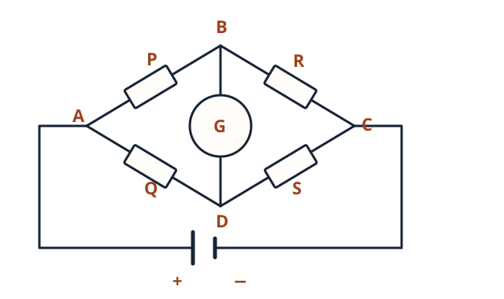
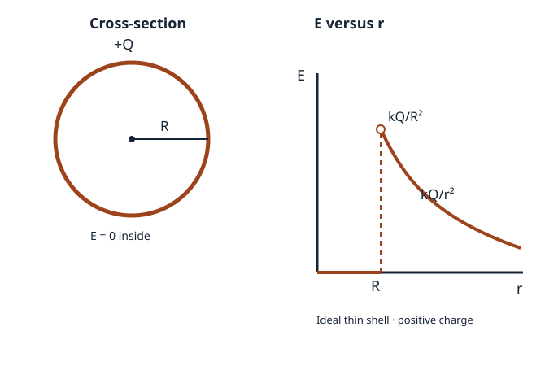
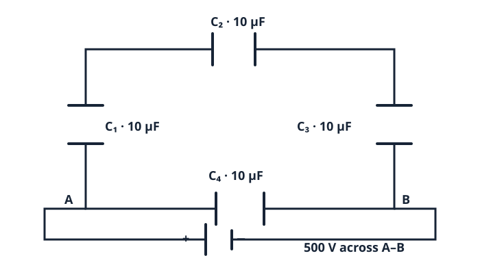
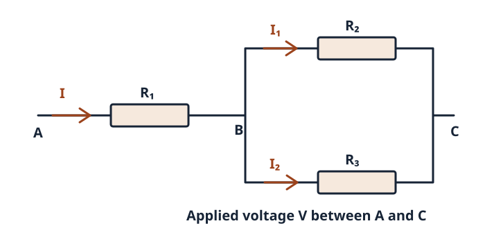

Q1APDF p. 1
The SI unit of electric potential is — (i) Volt (ii) Coulomb (iii) Joule (iv) Newton.
Worked answer
(i) Volt. Potential is work per unit charge: 1 V = 1 J/C.
Physics · supplied 2026 paper
50 marks · pass marks 17 · 2 hours · 8 pages. This is an unofficial transcription and solution guide to the PDF you supplied, not an official marking scheme.
Q1 · 1 × 6 = 6
The SI unit of electric potential is — (i) Volt (ii) Coulomb (iii) Joule (iv) Newton.
(i) Volt. Potential is work per unit charge: 1 V = 1 J/C.
The work done in moving a charge between two points on the same equipotential surface is — (i) Positive (ii) Negative (iii) Zero (iv) Infinite.
(iii) Zero. ΔV = 0, so W = qΔV = 0.
The SI unit of resistivity is — (i) Ω m (ii) Ω/m (iii) Ω m² (iv) Ω² m.
(i) Ω m. From R = ρL/A, ρ = RA/L.
The magnetic field at the centre of a circular current-carrying coil is directed along its — (i) Radius (ii) Diameter (iii) Axis (iv) Circumference.
(iii) Axis, perpendicular to the plane of the coil; direction follows the right-hand rule.
The magnetic susceptibility of a diamagnetic substance is — (i) Positive (ii) Negative (iii) Zero (iv) Infinite.
(ii) Negative: its induced magnetisation opposes the applied field.
According to Faraday’s law, induced emf is produced due to a change in — (i) Electric field (ii) Current (iii) Magnetic flux (iv) Resistance.
(iii) Magnetic flux linked with the circuit; ε = −dΦ/dt for one turn.
Q2 · 2 × 8 = 16
Using Gauss’s law, explain why the field inside a hollow conducting sphere is zero.
In electrostatic equilibrium with no charges in the hollow cavity, excess charge resides on the outer surface and the field within the conducting material is zero. Inside the empty cavity, a concentric Gaussian surface encloses zero charge; spherical symmetry of the isolated charged sphere then gives E(4πr²) = 0, so E = 0. Gauss’s law alone, without symmetry/electrostatic assumptions, establishes zero net flux, not pointwise zero field.
Define electric dipole moment. Write its SI unit.
For charges −q and +q separated by displacement vector d directed from −q to +q, electric dipole moment p = qd. Its SI unit is coulomb metre (C m).
Define current density. Write its SI unit.
Current density J is current per unit area perpendicular to the flow, J = I/A for uniform flow; in general dI/dA. It points along conventional current. SI unit: A m⁻².
A wire carries 5 A. Its cross-sectional area is 2 × 10⁻⁶ m². Calculate the current density.
J = I/A = 5/(2 × 10⁻⁶) = 2.5 × 10⁶ A m⁻².
Write any two properties of magnetic field lines.
They form closed continuous loops (outside a bar magnet they run N to S and inside S to N). They never intersect: otherwise the field would have two directions at one point.
State Ampere’s circuital law and mention one application.
∮ B·dl = μ₀ Ienclosed for steady currents in vacuum. It is used to find the field around an infinitely long straight current-carrying wire: B = μ₀I/(2πr).
Write Coulomb’s law in vector form. What is the SI unit of permittivity of free space?
For displacement vector r₂₁ from charge q₁ to q₂: F₂₁ = [q₁q₂/(4πε₀r₂₁²)] r̂₂₁. SI unit of ε₀: F m⁻¹ (equivalently C² N⁻¹ m⁻²). Signs of charges determine force direction.
State Faraday’s first law of electromagnetic induction.
Whenever magnetic flux linked with a closed circuit changes, an emf is induced; a current flows if the circuit is closed.
What is self-induction?
A changing current in a circuit changes its own magnetic flux and induces an emf opposing that change: ε = −L dI/dt (for constant self-inductance L).
Q3 · 3 × 6 = 18
State Gauss’s theorem. Hence obtain the field due to an infinitely long straight line charge.
Gauss: ∮ E·dA = Qenc/ε₀. For uniform line charge density λ, choose a coaxial cylindrical Gaussian surface of radius r and length ℓ. Flux through end faces is zero because E is radial; curved-face flux is E(2πrℓ). Enclosed charge is λℓ. Hence E = λ/(2πε₀r), radially outward for λ>0 (inward for λ<0).
A charge of 5 μC is at the centre of a cube of side 20 cm. Find flux through each face.
Total flux through the cube = q/ε₀. By symmetry its six faces receive equal flux: Φface = q/(6ε₀) = 5 × 10⁻⁶/(6 × 8.854 × 10⁻¹²) ≈ 9.41 × 10⁴ N m²/C per face. Side length does not affect the flux.
Write the law applied in the Wheatstone bridge principle. Draw a Wheatstone bridge.

The bridge uses Kirchhoff’s circuit laws. At balance the galvanometer current is zero (IG = 0). With the arms P = AB, Q = AD, R = BC, S = DC as labelled here, their ratios are P/Q = R/S. Draw the four resistive arms, the galvanometer between B and D, and the source across A and C.
Derive the relation between current density and drift velocity.
For charge carriers of number density n, charge q each, and drift velocity vector vd, the magnitude of charge crossing area A in Δt is n|q|A|vd|Δt. Thus I = n|q|A|vd| in magnitude, while the vector current density is J = nqvd. For electrons q = −e and electron drift velocity vd, the signed vector relation is J = −ne vd. Conventional current is opposite their drift. Magnitude: J = ne|vd|.
Using Biot–Savart law, find the field at the centre of a circular current-carrying loop.
At the centre of a loop of radius R, each current element dl is perpendicular to its radius vector. Biot–Savart: dB = μ₀I dl/(4πR²), all contributions point along the axis. Integrate around the loop: ∮dl = 2πR. Therefore B = μ₀I/(2R) (or μ₀NI/(2R) for N turns).
A circular coil of radius 10 cm carries 5 A. Find its field at the centre.
Assuming one turn (the paper gives no turn count): R = 0.10 m. B = μ₀I/(2R) = (4π × 10⁻⁷ × 5)/(0.20) = π × 10⁻⁵ T ≈ 3.14 × 10⁻⁵ T. For N turns, multiply by N.
Differentiate diamagnetic and paramagnetic substances; give an example of each.
Diamagnetic: χm < 0, weakly repelled; example bismuth. Paramagnetic: χm > 0, weakly attracted; example aluminium. Both responses are weak compared with ferromagnetism.
Define magnetic susceptibility and establish μr = 1 + χm.
Magnetic susceptibility is χm = M/H. In a linear isotropic material B = μ₀(H + M) = μ₀(1 + χm)H. By definition B = μ₀μrH; compare coefficients: μr = 1 + χm.
State Faraday’s laws. A 250-turn coil has flux per turn changing from 0.08 Wb to 0.02 Wb in 0.02 s; calculate the emf.
First law: a changing flux linkage induces an emf. Second law: ε = −N ΔΦ/Δt (negative sign gives direction). Magnitude |ε| = 250|0.02 − 0.08|/0.02 = 750 V. This treats stated flux as flux per turn; if it meant total flux linkage, the answer would differ.
State Lenz’s law and explain its consistency with energy conservation.
The induced current flows in a direction whose magnetic field opposes the change of flux causing it. For example, approaching a magnet induces a field repelling it: external work must be done; that energy becomes electrical/thermal energy. If the induced current aided the approach, energy would appear without work.
Define self-inductance and obtain the energy stored in an inductor.
Flux linkage is NΦ = LI; L is self-inductance (unit henry, H). The opposing emf is ε = −L dI/dt. External power to build current is P = I L dI/dt, so dU = LI dI and U = ∫₀ᴵ LI dI = ½LI² (constant L).
A 4 H coil carries 3 A. Find energy in its magnetic field.
U = ½LI² = ½ × 4 × 3² = 18 J.
Q4 · 5 × 2 = 10
Each part also has an OR option. The resistor network proof on PDF p. 8 is the OR for Q4(c), not a fifth question.
Use Gauss’s law to find the field of a uniformly charged thin spherical shell at external and internal points. Sketch E versus r.

For total charge Q on a shell of radius R, spherical symmetry gives E(4πr²) = Qenc/ε₀. Outside (r > R): Qenc = Q, so E = Q/(4πε₀r²). Inside (r < R): Qenc = 0, so E = 0. For Q > 0 the field is radial outward. The ideal zero-thickness shell has a discontinuity: E(R⁻) = 0 and E(R⁺) = Q/(4πε₀R²); then it falls as 1/r². The surface itself is not assigned a unique value in the sketch.
A 12 V battery with 1 Ω internal resistance is connected to an external 5 Ω resistor. Calculate current and terminal voltage.
I = ε/(R + r) = 12/(5 + 1) = 2 A. Terminal potential difference V = ε − Ir = 12 − 2 × 1 = 10 V (also IR = 2 × 5 = 10 V).
State Faraday’s laws. Explain Lenz’s law and its consistency with energy conservation.
Faraday’s first law: changing magnetic flux linkage induces an emf (and a current in a closed circuit). Second law: ε = −N dΦ/dt; magnitude is the rate of change of flux linkage. Lenz’s law determines the direction: the induced current opposes the flux change. For a magnet pushed toward a conducting coil, the induced magnetic field resists the approach; the external work supplies the electrical energy and losses. An induced field assisting the motion would violate energy conservation.
A 500-turn rectangular coil of area 4 × 10⁻³ m² rotates at 120 rad s⁻¹ in a 0.5 T field. Derive ε(t) and maximum emf.
With normal making angle θ = ωt with the field, Φ = BA cos(ωt) per turn. ε(t) = −N dΦ/dt = NBAω sin(ωt), sign depending on chosen orientation. εmax = NBAω = 500 × 0.5 × (4 × 10⁻³) × 120 = 120 V.
Four 10 μF capacitors form a rectangle: C₁ on left, C₂ on top, C₃ on right, C₄ between the lower nodes. A 500 V supply is across the two lower nodes. Find equivalent capacitance and each charge.

The top path C₁–C₂–C₃ is a series chain: 1/Ctop = 1/10 + 1/10 + 1/10 = 3/10 (μF)⁻¹, hence Ctop = 10/3 μF. C₄ = 10 μF lies directly across the lower terminals, parallel with that chain. Ceq = 10 + 10/3 = 40/3 μF ≈ 13.33 μF. Both branches have 500 V. In the series branch each has the same charge: Q₁ = Q₂ = Q₃ = CtopV = (10/3) × 500 = 5000/3 μC ≈ 1,667 μC. Each of these three drops 500/3 ≈ 166.7 V. Q₄ = C₄V = 10 × 500 = 5,000 μC. Total supplied charge = (40/3) × 500 = 20,000/3 μC ≈ 6,667 μC.
R₁ is in series with R₂ and R₃ in parallel. Show I = V(R₂ + R₃)/(R₁R₂ + R₁R₃ + R₂R₃).

Rparallel = R₂R₃/(R₂ + R₃). Req = R₁ + Rparallel = (R₁R₂ + R₁R₃ + R₂R₃)/(R₂ + R₃). Ohm’s law I = V/Req gives the stated expression. No numerical resistor values are supplied.
After the exam
Structure: 6 + 16 + 18 + 10 = 50 marks. Q2 offers one question beyond the eight required; Q3 has six parts with internal OR choices; Q4 asks for two of three, with internal OR choices.
Coverage: Electrostatics (charges, potential, Gauss), current electricity, magnetic effects and magnetism, and electromagnetic induction all appear. Q4(c) mixes circuit alternatives: a four-capacitor network or a resistor-network proof.
Connection to preparation: The six-chapter Physics guide covers the concepts tested here. This paper particularly rewards short textbook definitions, unit recall, Gaussian-surface steps, magnetic-field derivations and Faraday/Lenz explanations. Without your actual answers or a question-by-question comparison to what you studied, we cannot honestly score the guide’s predictive accuracy or your performance.
Skills tested: Direct definitions and units, symmetry-based derivations, circuit diagrams, numerical substitution and the energy explanation of Lenz’s law. This is a content analysis, not a grade or prediction of your score.
Important distinctions: The capacitor network has four capacitors (not three); Q3(c)’s circular-coil calculation is its OR option; Q4(c)’s resistor network is an OR. The 250-turn flux question assumes the listed flux is per turn. Q3(c)’s coil calculation assumes one turn because no turn count is stated.
What we cannot score: Your selected OR options and written responses haven’t been supplied. Do not treat this as an official mark scheme; an examiner may accept other correct wording or methods.